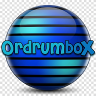

🥁 orDrumbox: Free Online Drum Machine
v2.0
GPL V3
Web-Based
orDrumbox is a browser-based beat maker and sequencer. It provides a creative environment to build drum patterns using acoustic, vintage, and 8-bit kits without any software installation.
🚀 Core Features
🎹 Advanced Step Sequencer
- Programmable grid for note entry and track looping.
- Support for complex polyrythmie and per-track swing settings.
- Precision controls for pitch, volume, and panning per note.
🔊 Synthesis & Automation
- Integrated Soft Synth with 3 VCOs, ADSR envelope, and filters.
- LFO modulators for dynamic pitch and volume effects.
- AI Generation: Includes an automatic Bass Line and Pattern Generator.
🛠 Getting Started
Direct Controls
Use your computer keyboard as a drum pad. Every key is mapped to a specific sound in the selected drumkit for live finger-drumming.
For more professional setups, orDrumbox is compatible with external MIDI controllers. You can use any MIDI hardware following the General MIDI (GM) standard to trigger sounds and perform live.
Data Management
- Import and export patterns as local project files.
- High-quality WAV export for use in other DAWs.
💡 Resources: Explore the Detailed User Guide or watch the Video Tutorial.
🏗 Open Source Project
orDrumbox is maintained by the community under the GPL V3 License.
- GitHub Repository: github.com/cadeli/ordrumbox-v2
- Official Website: www.ordrumbox.com